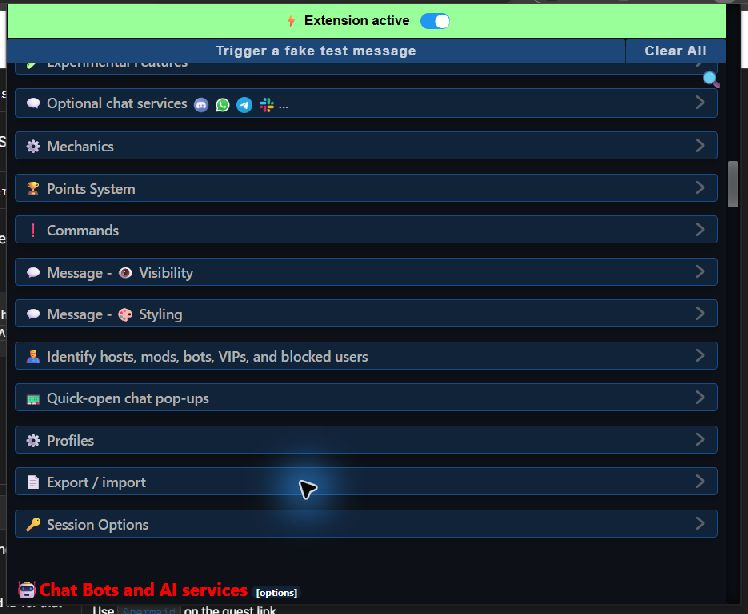
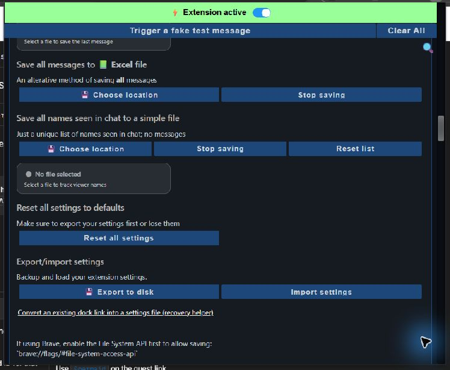
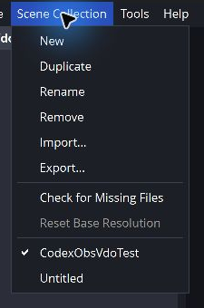
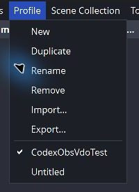

What To Export
For an unexpected donation beep, start with these two files:
- Social Stream Ninja settings: shows the enabled options and generated links.
- OBS Scene Collection: shows scenes, browser sources, media sources, source URLs, and global audio sources.
An OBS Profile is normally not needed for a browser-source beep. Export it only if support asks for output, video, or account-related settings.
Keep exports private. They can contain session passwords, webhook URLs, source URLs, connected-account details, or a stream key. Send them only to the person reviewing the problem, never in a public chat or forum.
1. Export Social Stream Ninja Settings
- Open the Social Stream Ninja control panel.
- Scroll to Global settings and tools.
- If you are already near the bottom of the page, select the JUMP link beside “Looking for the Global settings?” to move there.
- Under Global settings, find and select Export / import.

- Scroll inside the expanded section until you see Export/import settings.
- Select Export to disk.
- Choose where to save the file and enter any filename you like. Keep the .data extension.
- Select Save, then send that settings file privately to support without editing it.

2. Export The OBS Scene Collection
- In OBS, switch to the Scene Collection used when the problem happens.
- Select Scene Collection in the top menu.
- Select Export..., choose a folder, and save the JSON file.
- If the problem happens in more than one collection, export each affected collection.

3. Export The OBS Profile Only If Asked
- Switch to the affected OBS Profile.
- Select Profile in the top menu.
- Select Export..., choose a folder, and save the JSON file.

A Profile can include connected-account or stream-key information. Share it privately and only when it is required.
Send The Support Package
Attach the Social Stream Ninja settings file (.data) and OBS Scene Collection JSON. Also include the name of the donation platform and the approximate time the sound happened.
If the problem is hard to reproduce, a short clip with one donation is useful. Include the OBS Profile JSON only when support specifically asks for it.